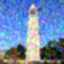
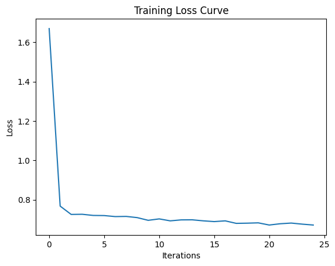
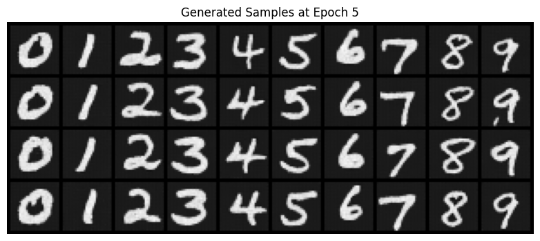

Project #5: Part A
CS180: Intro to Computer Vision and Computational Photography
Introduction
This project focuses on exploring the capabilities of diffusion models for various tasks, including image sampling, inpainting, and creating optical illusions.
It serves as the first part of a larger project, allowing me to get hands-on experience with pretrained diffusion models, implementing sampling loops, and performing creative experiments with guided generation.
Part 0: Setup
I began by gaining access to the DeepFloyd IF diffusion model and setting up the environment. This involved creating a Hugging Face account, accepting usage conditions, and downloading precomputed text embeddings for ease of use on free-tier Colab GPUs.
Part 1: Sampling Loops
1.1 Implementing the Forward Process
I implemented a function to add noise to an image progressively. This helped me understand how diffusion models generate noisy images and reverse the process. Below are the results for the Campanile test image at different noise levels:
1.2 Classical Denoising
Using Gaussian blur, I attempted to denoise the images from the previous step. While this method reduces noise, it struggles to recover the original details effectively. The results are displayed below, side by side for comparison:
Comparison at t=250

Comparison at t=500
Comparison at t=750
1.3 One-Step Denoising
Here, I used a pretrained diffusion model to estimate and remove noise from the images. This method produced much better results compared to Gaussian blur. Below are the noisy images, Gaussian blur results, and the diffusion model denoising results for comparison:
Comparison at t=250
Comparison at t=500
Comparison at t=750
1.4 Iterative Denoising
I implemented an iterative denoising process to gradually refine noisy images into clean ones. This allowed for more effective recovery compared to a single-step approach. Below are the deliverables for this part:
- Create strided_timesteps: a list of monotonically decreasing timesteps, starting at 990, with a stride of 30, eventually reaching 0. Also initialize the timesteps using the function
stage_1.scheduler.set_timesteps(timesteps=strided_timesteps).
- Show the noisy image every 5th loop of denoising (it should gradually become less noisy).
- Show the final predicted clean image, using iterative denoising.
- Show the predicted clean image using only a single denoising step, as was done in the previous part. This should look much worse.
- Show the predicted clean image using Gaussian blurring, as was done in part 1.2.
- Complete the iterative_denoise function.
Noisy Image (Every 5th Loop)
Final Predicted Clean Image (Iterative Denoising)
Predicted Clean Image (Single Step Denoising)
Predicted Clean Image (Gaussian Blurring)
Part 1.5: Diffusion Model Sampling
In this section, I generated images from pure noise using the iterative_denoise function. This effectively demonstrates the diffusion model's ability to transform noise into realistic images.
Generated Samples

Part 1.6: Classifier-Free Guidance (CFG)
By implementing the iterative_denoise_cfg function, I was able to enhance the quality of generated images using CFG. This method significantly improved the realism of the results by combining conditional and unconditional noise estimates.
Generated Samples with CFG
Part 1.7: Image-to-Image Translation
In this section, I explored the SDEdit algorithm to transform images by progressively denoising them with varying starting noise levels. The results highlight how noise influences the degree of transformation.
1.7.1 Campanile Edits
The Campanile test image was processed using noise levels starting at various indices. Higher starting noise levels led to more dramatic transformations, while lower noise levels resulted in subtle edits closer to the original image.
Campanile Edits at Different Noise Levels
1.7.2 Hand-Drawn Sketches
Hand-drawn sketches were processed through the same method, transforming them into more realistic images while retaining some features of the original drawings. Each noise level progressively reshaped the image to align with the model's learned image manifold.
Sketch 1 Edits

Sketch 2 Edits
1.7.3 Web Images
Web images were similarly processed, showcasing how the model can adapt diverse sources into refined outputs. By varying the starting noise levels, the images transitioned from abstract or distorted versions back to realistic representations.
Part 1.8: Visual Anagrams
By implementing the visual_anagrams function, I created optical illusions where an image changes appearance when flipped upside down.
Part 1.9: Hybrid Images
In this section, I created hybrid images that appear differently depending on the viewer's distance, using low-pass and high-pass filters to combine features from two images.
Part 2: Diffusion Models from Scratch
In Part 2, I trained a diffusion model from scratch on the MNIST dataset. This involved implementing a UNet architecture, training it as a denoiser, and using it iteratively for diffusion-based image generation. The tasks progressed from single-step denoising to time-conditioned and class-conditioned UNet models.
2.1 Single-Step Denoising
I implemented a UNet architecture for single-step denoising. The model was trained on noisy MNIST images to reconstruct clean images by optimizing the L2 loss. Below are visualizations of the noising process and the results after training for 1 and 5 epochs.
Visualization of Noising Process
Training Loss Curve

Results After Training
After Epoch 1
2.2 Time-Conditioned UNet
I extended the UNet architecture to include time conditioning, enabling it to handle varying noise levels. The model was trained to predict noise given a noisy image and its timestep. Below are the training loss curve and sampling results at different epochs.
Training Loss Curve
Sampling Results
After Epoch 5
After Epoch 20
2.3 Class-Conditioned UNet
To improve generation control, I added class conditioning to the UNet architecture. This involved modifying the architecture to take a one-hot encoded class vector along with the timestep. Below are the training loss curve and sampling results with classifier-free guidance.
Training Loss Curve

Sampling Results
After Epoch 5

After Epoch 20